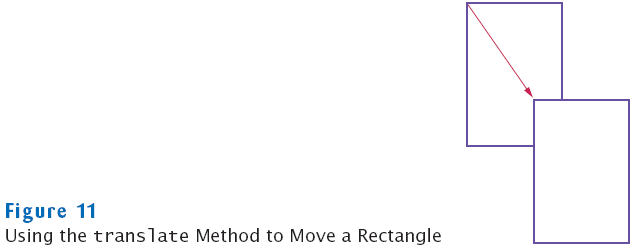

previous
|
start
|
next
Accessor and Mutator Methods
Accessor method: does not change the state of its implicit parameter
double width = box.getWidth();
Mutator method: changes the state of its implicit parameter
box.translate(15, 25);

previous
|
start
|
next